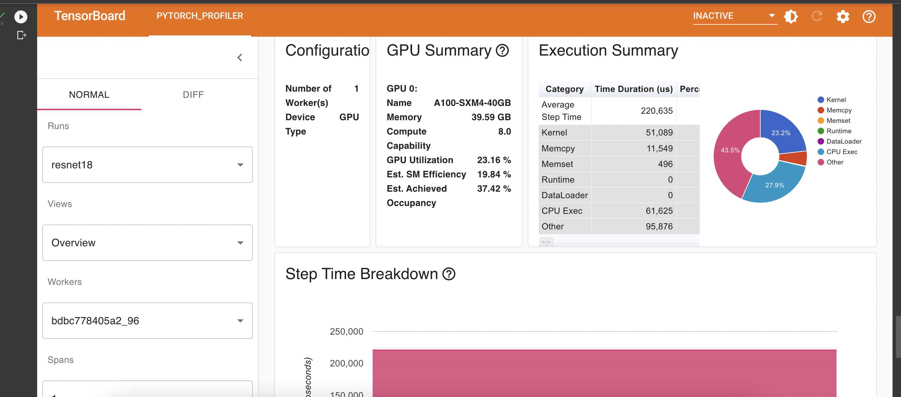
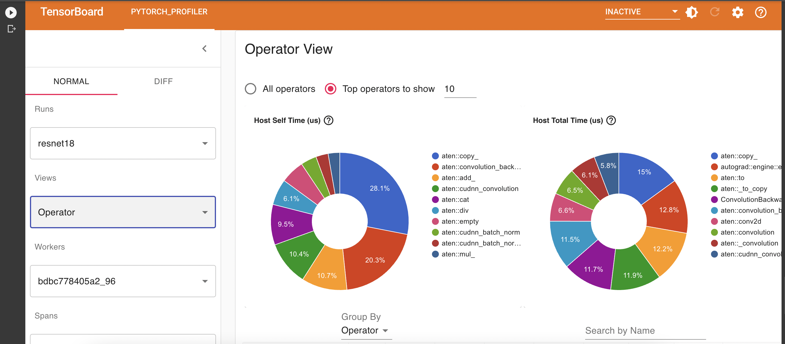
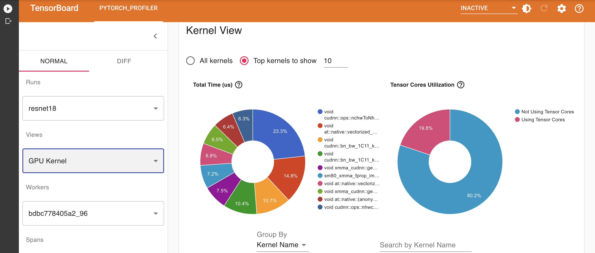
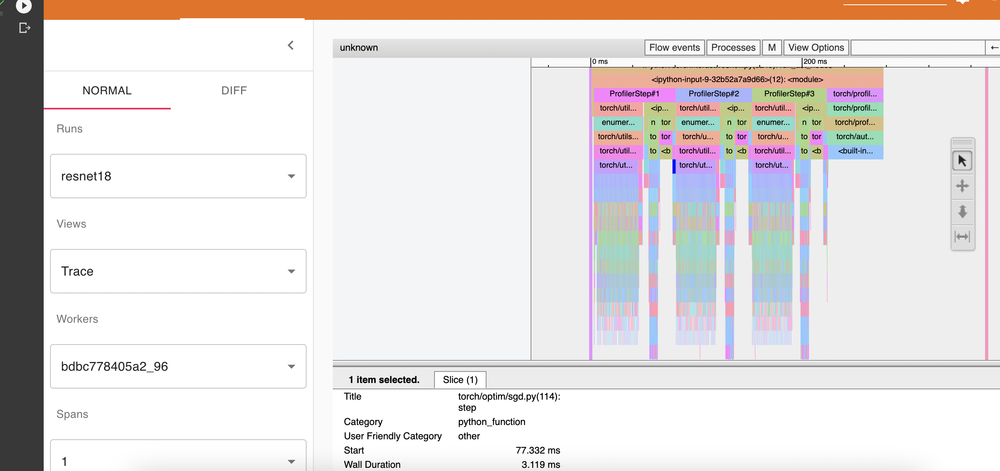
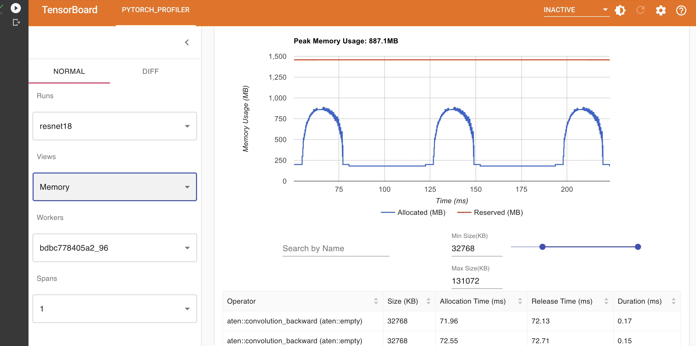
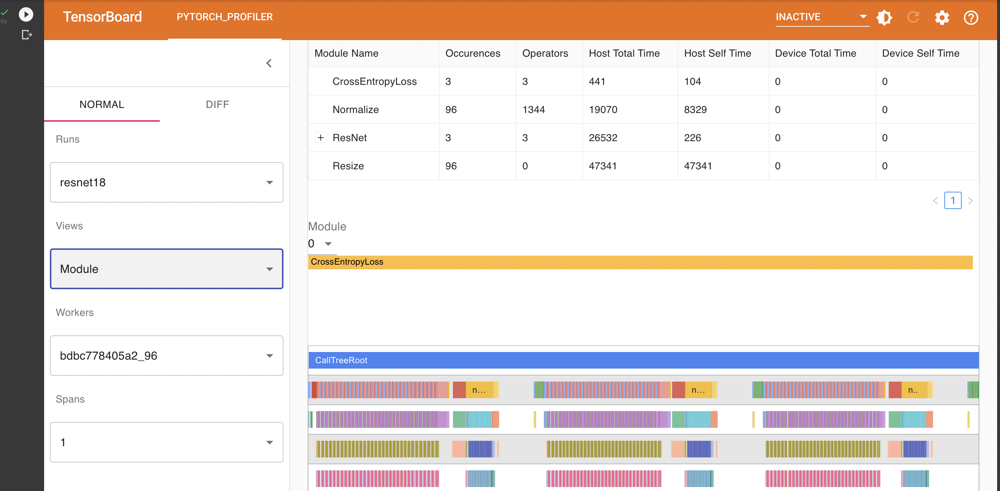

Efficent Data Loading for Model Training
Contents
3. Efficent Data Loading for Model Training#
Iteration speed is one of the most important factors in the success of a machine learning project. This is because machine learning is very much an empirical science. For a particular domain and a particular dataset, hundreds of iterations may be needed for experimentation before a good recipe is found.
Data loading can have a big impact on iteration speed, especially for computer vision problems with large amount of data. In this project we will look at the different choices of data loading and the impact on speed (not accuracy, yet).
3.1. Prepare the dataset and dataloader#
import torch
import torchvision
from torchvision.datasets import CIFAR10
from torchvision import transforms as T
from torch.utils.data import DataLoader
transform = T.Compose(
[T.Resize(224),
T.ToTensor(),
T.Normalize((0.5, 0.5, 0.5), (0.5, 0.5, 0.5))])
cifar10_train = CIFAR10(train=True, download=True, root="./cifar10", transform=transform)
Files already downloaded and verified
train_loader = DataLoader(cifar10_train, batch_size=32, shuffle=True)
3.2. Simple profiling: Throughput for Data Scan#
First we profile the dataloader for its speed in scanning data, without considering moving data to GPU for training.
How many examples can the dataloader scan per second? How does parameters batch_size, shuffle and num_workers impact throughput?
import time
from tqdm.notebook import tqdm
def profile_scan_throughput(dataloader, limit=30000):
start_time = time.time()
cnt = 0
# Add `while True` if you are worried about a StopIteration error.
for batch in tqdm(dataloader):
inputs, _ = batch
cnt += int(inputs.shape[0])
if cnt >= limit:
break
end_time = time.time()
seconds = end_time - start_time
print(f"Scanning {cnt} examples took {seconds:.2f} seconds. Throughput: {cnt / seconds:.2f} examples per second.")
profile_scan_throughput(DataLoader(cifar10_train, batch_size=32, shuffle=False))
Scanning 30016 examples took 46.25 seconds. Throughput: 649.06 examples per second.
profile_scan_throughput(DataLoader(cifar10_train, batch_size=1, shuffle=False))
Scanning 30000 examples took 43.22 seconds. Throughput: 694.14 examples per second.
# Do it again to observe the variance
profile_scan_throughput(DataLoader(cifar10_train, batch_size=1, shuffle=False))
Scanning 30000 examples took 42.92 seconds. Throughput: 698.95 examples per second.
profile_scan_throughput(DataLoader(cifar10_train, batch_size=256, shuffle=False))
Scanning 30208 examples took 56.42 seconds. Throughput: 535.40 examples per second.
profile_scan_throughput(DataLoader(cifar10_train, batch_size=256, shuffle=True))
Scanning 30208 examples took 56.35 seconds. Throughput: 536.08 examples per second.
profile_scan_throughput(DataLoader(cifar10_train, batch_size=256, shuffle=True, num_workers=2))
Scanning 30208 examples took 36.57 seconds. Throughput: 825.94 examples per second.
profile_scan_throughput(DataLoader(cifar10_train, batch_size=256, shuffle=True, num_workers=8))
Scanning 30208 examples took 13.58 seconds. Throughput: 2224.26 examples per second.
From the above numbers,
num_workershad a big impact on the throughput,batch_sizehad small impact,shufflehad no impact.
Are there other important dataloder parameters we should investigate?
3.3. More Complex Image Transforms#
Image transforms and augmentations (we will come back to this in the next project), can levy a big toll on CPU and impact throughput, especially if the image size is large. We resize the images to 200x200 pixels, and add a few more image transformations.
# TODO: add examples
transform = T.Compose(
[
T.Resize(200),
T.RandomCrop(120, padding=4),
T.RandomHorizontalFlip(),
T.RandomRotation(30),
T.ColorJitter(brightness=0.5, hue=0.3),
T.ToTensor(),
T.Normalize((0.5, 0.5, 0.5), (0.5, 0.5, 0.5))]
)
cifar10_train2 = CIFAR10(train=True, download=True, root="./cifar10", transform=transform)
profile_scan_throughput(DataLoader(cifar10_train2, batch_size=256, shuffle=True), limit=15000)
Scanning 15104 examples took 41.06 seconds. Throughput: 367.85 examples per second.
The throughput dropped by 50%. As an exercise, feel free to try larger image sizes like 512.
profile_scan_throughput(DataLoader(cifar10_train2, batch_size=256, shuffle=True, num_workers=8), limit=15000)
Scanning 15104 examples took 8.52 seconds. Throughput: 1773.74 examples per second.
With more workers, we are able to get the througput back up to roughly the same order of magnitude as before, though not quite there.
Note
Bottle neck of data loading
Even after tuning the concurrency parameter num_workers, two types of bottleneck can occur:
CPU. When processing large images (e.g. medical images) on a machine where there are few CPU cores compared to GPU (e.g. 8 vCPU cores for a V100), then CPU can be a bottle neck. You will notice this when the GPU utilization is low, but the CPU utilization is near 100%.
I/O. When the network or local hard drive has low bandwidth, both CPU and GPU can be waiting for I/O, and have low utilization.
3.4. Deeper Profiling using Tensorboard Profiler#
!pip install torch_tb_profiler
device = torch.device("cuda:0")
model = torchvision.models.resnet18(pretrained=False).cuda(device)
criterion = torch.nn.CrossEntropyLoss().cuda(device)
optimizer = torch.optim.SGD(model.parameters(), lr=0.001, momentum=0.9)
_ = model.train()
def train_step(data):
inputs, labels = data[0].to(device=device), data[1].to(device=device)
outputs = model(inputs)
loss = criterion(outputs, labels)
optimizer.zero_grad()
loss.backward()
optimizer.step()
def profile_with_torch_profiler(dataloader):
with torch.profiler.profile(
schedule=torch.profiler.schedule(wait=1, warmup=1, active=3, repeat=2),
on_trace_ready=torch.profiler.tensorboard_trace_handler('./log/resnet18'),
record_shapes=True,
profile_memory=True,
with_stack=True
) as prof:
for step, batch_data in enumerate(dataloader):
if step >= (1 + 1 + 3) * 2:
break
train_step(batch_data)
prof.step() # Need to call this at the end of each step to notify profiler of steps' boundary.
You can bring up a Tensorboard to see where time is spent. You can pick other choices in the “Views” dropdown menu:
The operator view displays the performance of every PyTorch operator that is executed either on the host or device.
The GPU kernel view shows all kernels’ time spent on GPU.
The trace view shows timeline of profiled operators and GPU kernels. (Can be slow to load!)
The memory view shows memory usage breakdown by operator and time.
The module view shows time spent in each sub-module in the main
nn.Modulebeing trained.
%reload_ext tensorboard
%tensorboard --logdir=./log
Here are what the above views look like:
Summary view 
Operator view 
GPU kernel view 
Trace view 
Memory view 
Module view 